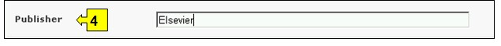
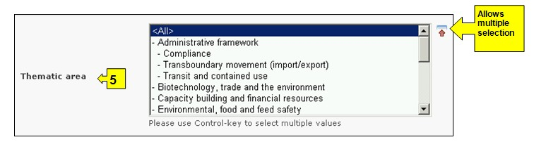
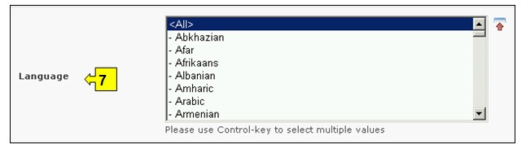

URL: http://bch.cbd.int/database/bibliographic-references/
El Artículo 20 del Protocolo de Cartagena establece el CIISB para facilitar el intercambio de información y experiencia con OVM entre las Partes, de tal forma que presta asistencia a las mismas en la implementación del Protocolo. Para ayudar a cumplir con esta misión el CIISB contiene información proporcionada por las Partes, gobiernos y organizaciones que es relevante en bioseguridad y en la implementación del Protocolo
Adicionalmente al Centro de Recursos de Información en Bioseguridad (CRIB) detallado en la sección 2. 7 de este módulo, el CIISB proporciona acceso a una base de datos de artículos científicos (referencia completa y resumen), publicados en revistas periódicas desde 1990, relacionados con bioseguridad y evaluaciones de riesgo de la biotecnología. La Basede Datos de Bibliografía Científica está localizada y es administrada por el Centro Internacional de Ingeniería Genética y Biotecnología (Sigla en inglés: ICGEB - International Centre for Genetic Engineering and Biotechnology) y se ha hecho interoperable con el CIISB.
La interfase del CIISB para buscar publicaciones en la Base de Datos de Bibliografía Científica, puede ser obtenida utilizando el vínculo Búsqueda de Información localizado en la barra de navegación, o en el menú ubicado en la barra izquierda de la página Búsqueda de Información, o en el vínculo del texto Base de Datos de Bibliografía Científica en la misma página.

En la página Búsqueda en la Base de Datos de Bibliografía Científica hay diez cuadros de criterios de búsqueda. Cada uno de estos tiene un menú desplegable en el que se puede seleccionar el criterio de búsqueda. La búsqueda por defecto es el primer elemento que aparece en la lista desplegada. En la parte derecha de cada cuadro, un botón le permite al usuario activar selecciones múltiples. Una vez se está en el modo de selección múltiple, es posible agregar más criterios haciendo clic en el criterio y presionando al mismo tiempo la tecla Ctrl (Control).
Una búsqueda solo mostrará los primeros 1000 registros, aunque exista en la base de datos un número mayor de registros que corresponda con el criterio de selección utilizado.

Cuadro 1 [Título] brinda al usuario la opción de escribir el título de la publicación. El usuario puede también ingresar una o varias palabras del título, usando la sintaxis de búsqueda establecida con Y u O entre las palabras.

Cuadro 2 [Autor(es)] permite al usuario buscar a uno o más autores específicos insertando su(s) apellido(s) en el cuadro de búsqueda.

Cuadro 3 [Año de publicación] presenta una lista de opciones según la fecha de publicación del artículo. Para seleccionar el año exacto de la(s) publicación(es) el usuario puede usar solamente el cuadro de año. También puede hacer el filtro seleccionando un período de tiempo antes o después del año seleccionado.

Cuadro 4 [Casa editorial] permite al usuario buscar en la base de datos los artículos publicados según la casa editorial.

Cuadro 5 [Área temática] presenta una lista de las principales áreas temáticas de publicaciones disponibles y permite al usuario limitar la búsqueda a una o más de estas áreas.

Cuadro 6 [Tipo de registro] presenta una lista de los tipos de registros almacenados en esta base de datos. Esto permite al usuario limitar la búsqueda a fuentes específicas de información.

Cuadro 7 [Idioma] permite al usuario limitar la búsqueda a documentos en uno o más idiomas.

Cuadro 8 [ISSN] permite al usuario ingresar uno o más ISSN (por su sigla en inglés ‘International Standard Serial Numbers’) para localizar la publicación de su interés. El ISSN es un número único de ocho dígitos usado para identificar una publicación periódica impresa o electrónica. El sistema ISSN fue adoptado como un estándar internacional ISO 3297 en 1975.

Cuadro 9 [Fecha del registro] permite al usuario que limite la búsqueda de acuerdo con la fecha en la que el registro ha sido ingresado al CIISB. El menú desplegable proporciona un número de opciones para limitar la búsqueda solamente a aquellos registros que han sido enviados dentro del período de tiempo seleccionado (Ej: ‘último día’, ‘último mes’, ‘último año’, etc.).

Cuadro 10 [Búsqueda por palabras clave] Brinda la oportunidad de utilizar palabras clave para restringir la búsqueda. El usuario puede utilizar la sintaxis estándar de palabras clave (combinación de los operadores Y/O) para buscar con múltiples palabras, o partes de palabras (Ej. “Importación O Exportación”). La búsqueda con palabras clave permite obtener solamente registros que contengan el texto exacto y no sinónimos que no hayan sido insertados (Ej: Una búsqueda con la palabra clave “Maíz” producirá una lista de registros que contienen la palabra “Maíz” pero no los registros que contengan “Zea mays”).
La página de búsqueda ofrece tres botones para obtener la lista de registros. El botón Busque Ahora (Tanto en la parte superior como inferior de la interfase de búsqueda) permite al usuario activar una búsqueda basada en los criterios seleccionados en los cuadros de la tabla de búsqueda. Los resultados de búsqueda son ordenados alfabéticamente, por defecto, de acuerdo con el nombre de país. El botón Busque todos los registros (En la parte inferior de la interfase de búsqueda) permite al usuario obtener una lista de todos los registros en esta base de datos.

Ejemplo. Un usuario desea encontrar artículos científicos recientes sobre flujo de genes en cultivos. El usuario (i) selecciona después del 2006 en el cuadro año de publicación y (ii) ingresa flujo genético o entrecruzamiento en Palabra clave. Los resultados de la búsqueda se presentan en orden alfabético según los títulos de los artículos.


Asumiendo que el usuario encuentra un artículo útil del autor Lavigne, puede refinar la búsqueda agregando este apellido al cuadro de búsqueda Autor(es). Con esto podrá identificar otros artículos recientes del mismo autor y sobre el mismo tema.